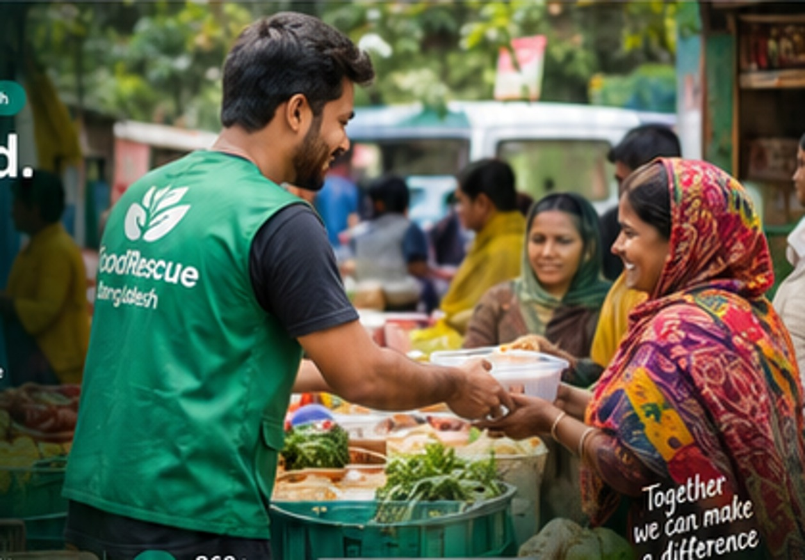

🍲
Restaurant
Post safe surplus food and review requests.
Register ↗Connecting restaurants, verified NGOs and volunteers to rescue safe surplus food and support communities.

Filter sample listings by area and urgency to see score-based recommendations.
Restaurant
1. Create surplus listing · 2. Declare food safety and deadline · 3. Review NGO requests.
Event organizer
1. Enter event name/type/date · 2. List safe leftover food · 3. Wait for safety review · 4. Coordinate pickup.
NGO
1. Report meal demand · 2. Review safe food matches · 3. Request donation · 4. Record distribution.
Volunteer
1. View unassigned pickup · 2. Accept opportunity · 3. Update delivery stages.
Admin
1. Verify partners · 2. Review food safety · 3. Validate demand · 4. Audit activity.
Demo markers use approximate area-centre coordinates, not exact addresses or road routes.
Select a marker to view sample food / demand details. Map tiles require an internet connection.
Post safe surplus food and review requests.
Register ↗Donate safe leftover food from weddings, conferences and community events.
Register ↗Request food, track deliveries and report distribution.
Register ↗Claim a verified rescue delivery and update progress.
Register ↗Verify users, review safety and monitor reports.
Admin login ↗